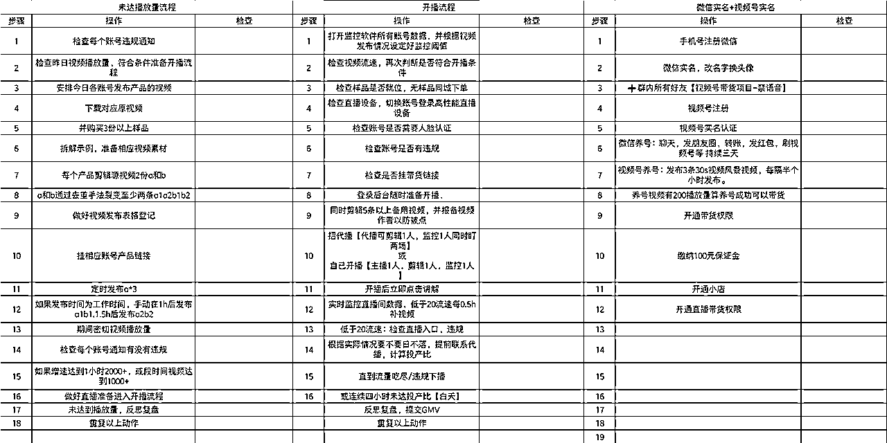
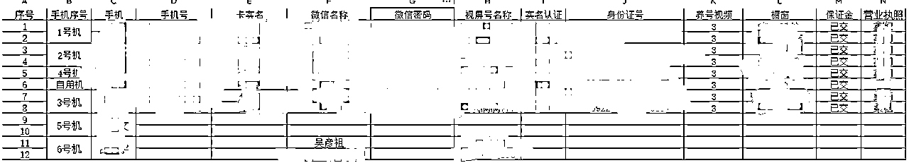
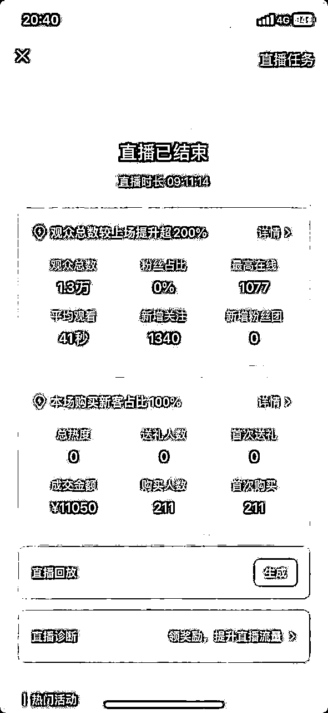
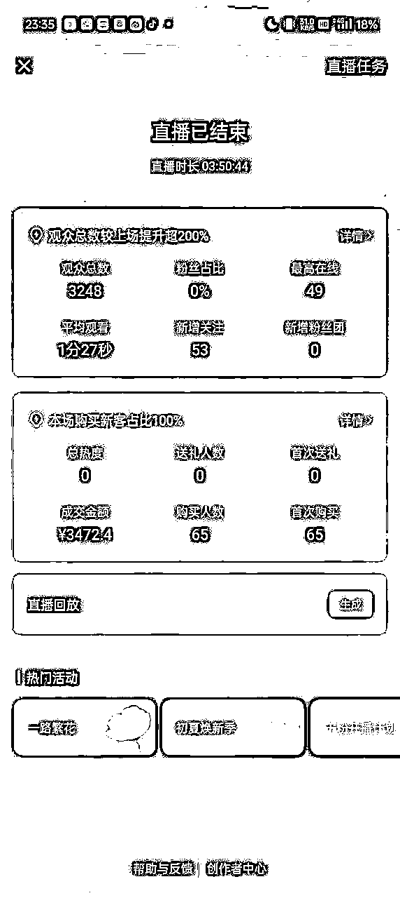
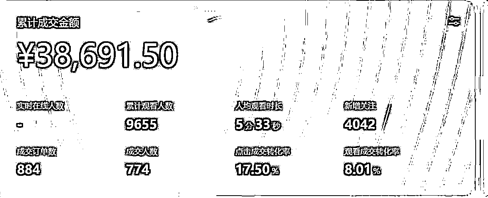

来源：https://ivpp5i7gbks.feishu.cn/docx/AaOXdH1oRozGXlxTmdFcBs4Dngb
先来分享视频号带货的爆单经历：
去年12月， 西安圈友肖肖在西安生财圈友群发布招募视频号线下训练营，当时我也报了12月的视频号带货航海，对这个项目非常有兴趣，希望跟着有结果的高手去做，后跟肖肖电话沟通过，但是因为当时在义乌做电商，不在本地，很遗憾没有参加上。
4月14日，小鹅老师组了一个线下拉新分享，有幸听到到肖肖本人和冷寒冰分享，听完以后找肖肖了解交流后决定加入视频号带货，当天晚上回家后就加入视频号项目，加入后开始学习连夜制作sop。

4月15日-16日，开始办卡，注册账号，养号，找朋友实名共做好6个账号准备。

账号准备好以后，就开始按照教程去做后续流程，视频剪辑，发布，查看数据-循环。但是一直没有破800的视频。
4月20日晚，视频有破1000，王司建议自播，在美团下了样品就开播，两个多小时出了两单，共计39.8。
4月21日凌晨1点多，剪好第二天的视频后，准备休息，群里发布了一个新素材，王司说是爆款，就又开机连夜把视频剪了，定时发布在3:55，然后就去休息了，没想着能爆，一觉起来9点多就发现视频爆了…
立马请教王司，王司说要立马开播，但是因为是朋友的号，开播需要实人认证，第一次开播后已经接近十点，但第一次找代播，时间衔接不好，开播十几分钟没有找到主播，未避免违规就下播了。
下播以后每几分钟，代播就位，再开播又得实人认证，朋友又在上课，等到正式开播已经到11点了。
一直直播到13点，没卖多少钱，准备下播，但王司说试试拉到四小时。
听话照做，于是命运的齿轮开始转动，期间一直补视频，数据就起来了，同时另一个号也开始爆量，也开始直播，补视频，期间两个号不停的违规，我和我老婆两个人有点手忙脚乱，也有很多失误。
到晚上11点左右，第二个号也不进人就下播了。
战绩如下：


最高的一个作品跑到了39.7万播放。但全都被关小黑屋，两个号休息30天。
5月2日，正在外面跟朋友约，突然之间手机提醒有破5000的视频，并没有在意，因为5000的播放量经常出现，过了半个小时，再次提醒这条视频又破10000，立即决定回家开播，赶回家的路上又提醒15000，回去的路上联系代播并准备开播，到家后并立即开始着手补视频，第一时间开播，没想到这次直播一直播就到第二天中午，直到所有的视频都被举报违规，共计播了15个小时，GMV3.8w。
账号被关小黑屋，又休息30天。

再后来一直也在做这个项目直到今天，期间也参加了视频号口播带货的航海，也有一些零零散散的出单，但是再也没有再现昨日的辉煌。
【惊心动魄】的爆单经历就算讲完了，来吧总结一下吧。
其中实操中踩到的坑，供大家参考：
1.没有时刻做好开播的准备，不能随时查看数据的时候，一定要登录监控软件，一但符合条件，立马进入战斗状态！尤其是发布视频后的1-3小时内盯好数据，每发一条视频，都要做好随时直播的准备！
2.记得挂链接！挂连接！发视频后务必要检查，我们有个号已经开播才发现没有挂连接！感觉损失了几个亿……
3.至少备1-2台高性能手机，至少得苹果XR以上用于直播！第一次开播没经验，不到十分钟，工作机就过热自动关机，幸好有备用xr立马切换账号继续直播。
4.视频混剪数量不足，导致突然爆量后，开播补视频有些跟不上很吃力。新手剪辑水平不到位的话，可以提前做好1条去重视频，以免开播手忙脚乱。
5.视频号账号太少，做互联网项目就要矩阵去做，虽然已经违规8个号，但我们现在已经➕到16个号，并且准备陆续注销老号，去开新号。
6.产品爆量后没有及时去裂变，反而害怕违规，不敢去跟。不能带来价值的号，是完全没有价值的号。如果当初一直坚持去打爆过的品，现在的数据可能会更好。
7.长时间不出结果一定要停下来看一看，自从5月2日开播后，基本上没有再开过播，因为我们小团队每天沉迷于剪视频和发视频上，市场上那个品爆了就去跟，完全没有规划，也没有停下来反思复盘，导致将近两个月颗粒无收。
最后给大家的一些建议：
我们本身也是视频号的新手，之所以这么快能跑通0-1，总结原因有以下几点：
最后用杨绛先生的一句话做总结:所有的困惑都是想得太多，做得太少。